P3-E-6 · Cropped grid captures (chrome hidden), one glider gun, all six themes, straight from the committed visual baselines. For the §6 DoD identifiability check: show each cropped image without its heading to three people and ask which theme it is. Record the result in .agents/planning/PHASE_3_THEME_ENGINE.md.
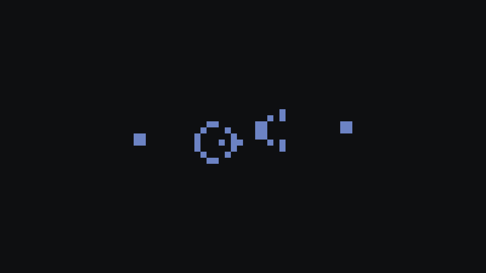
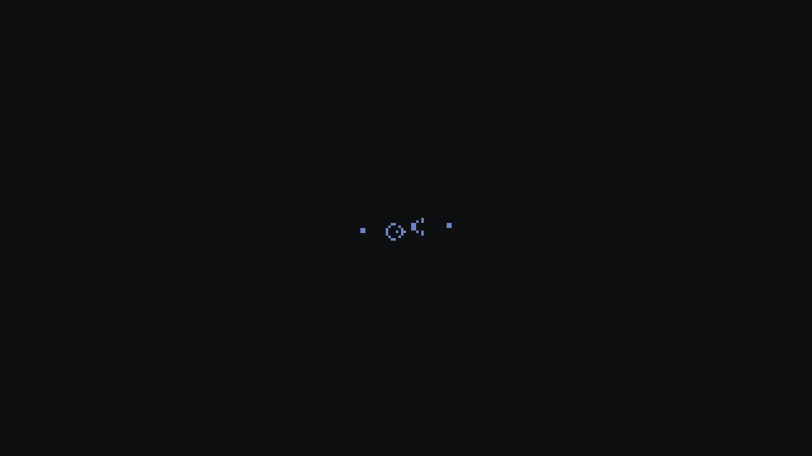
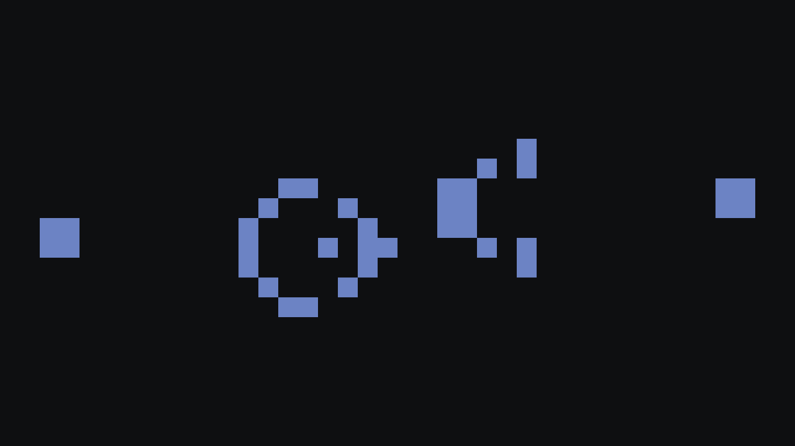
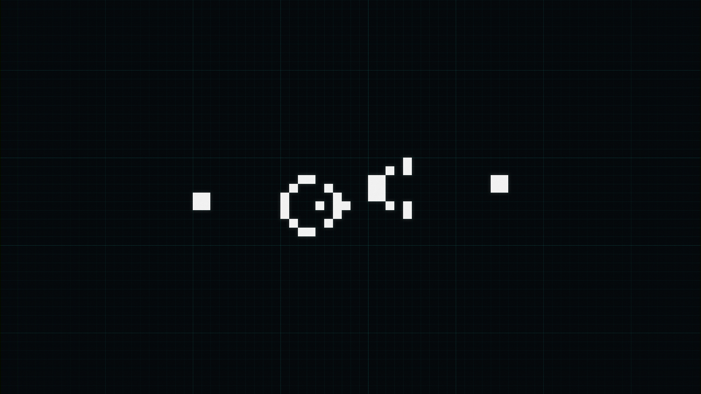
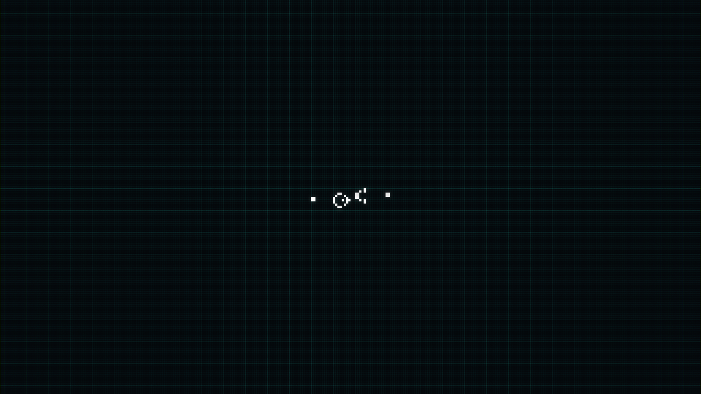
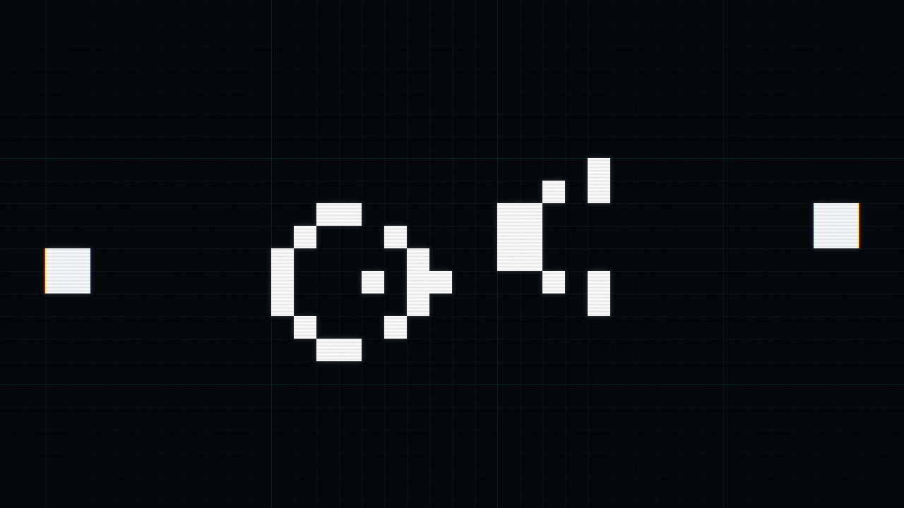
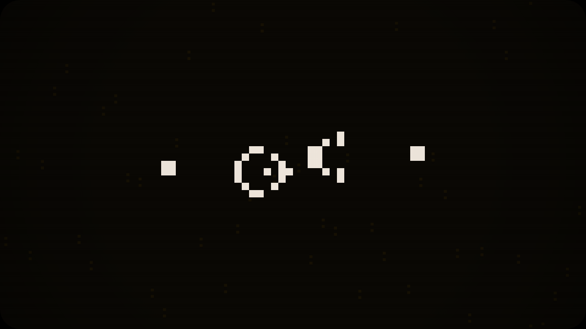
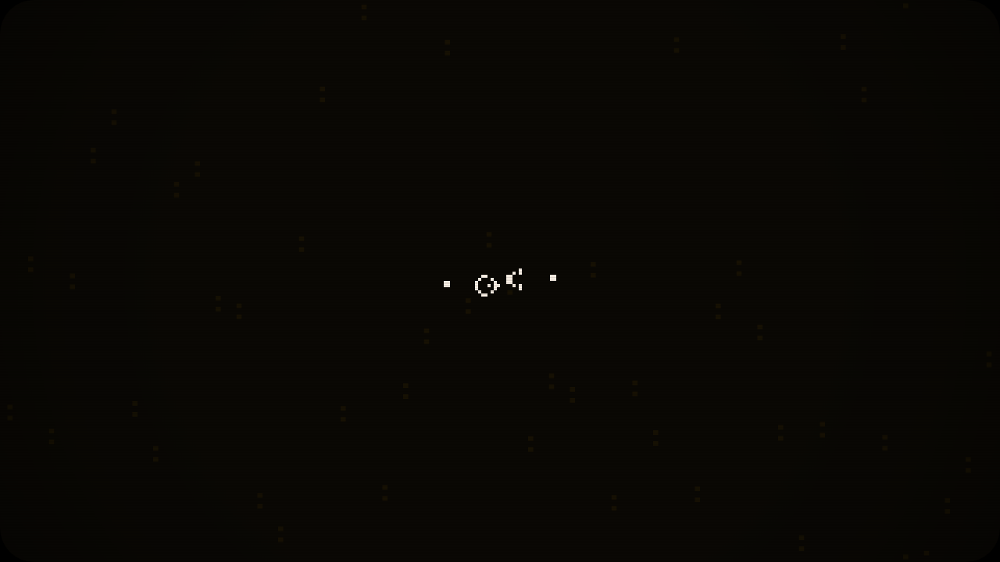
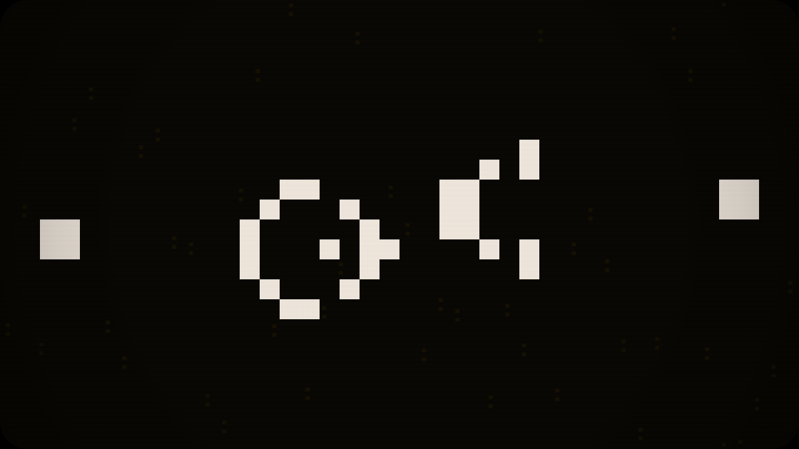
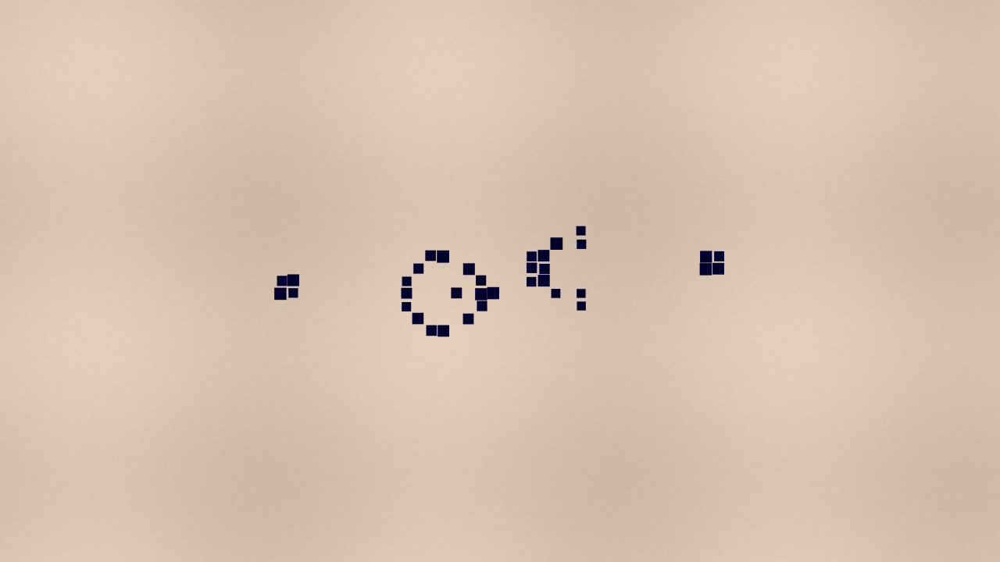
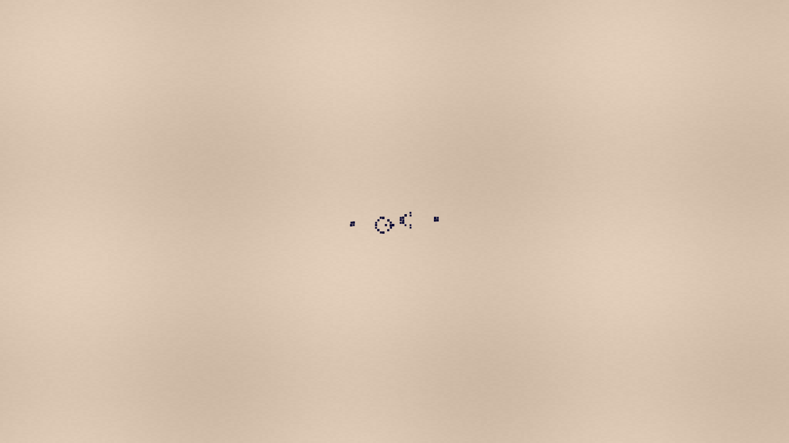
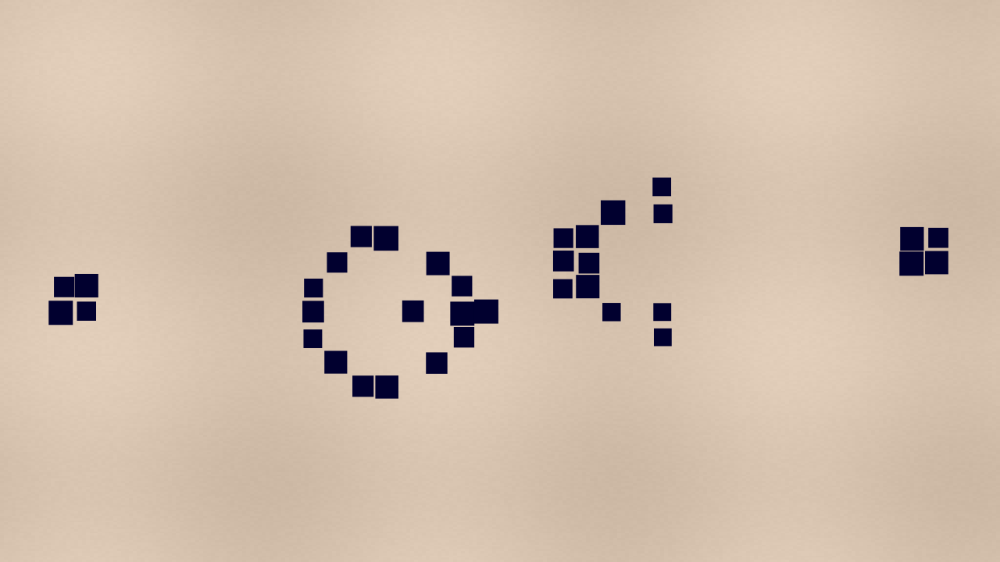
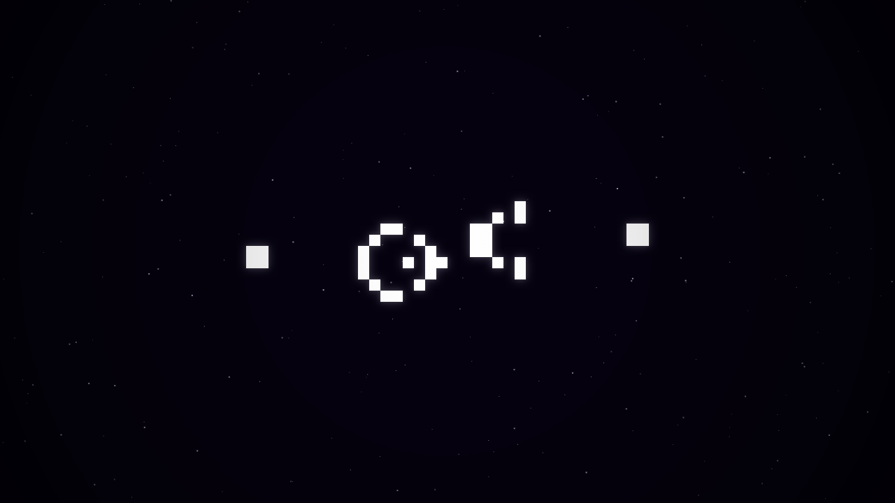
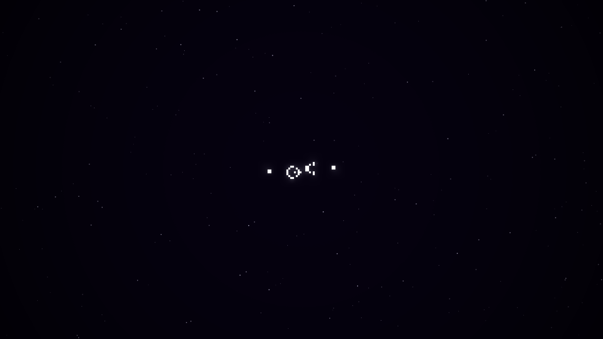
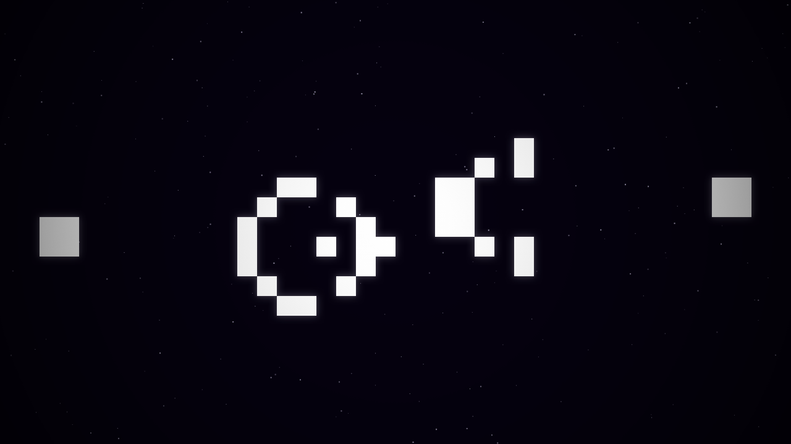
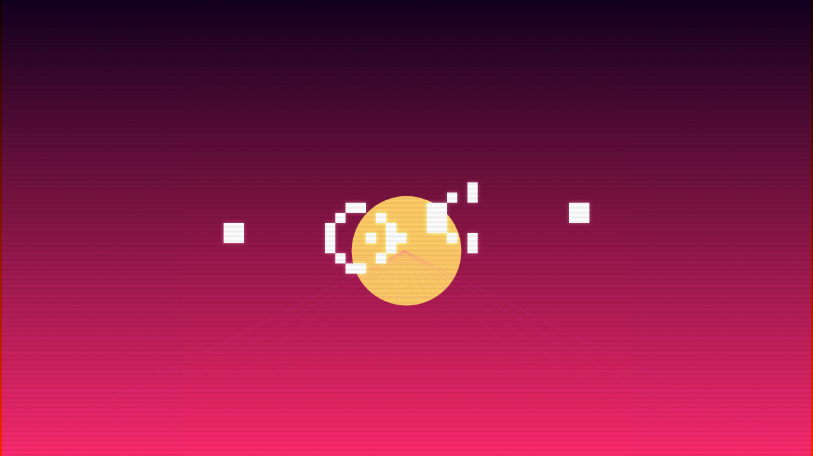
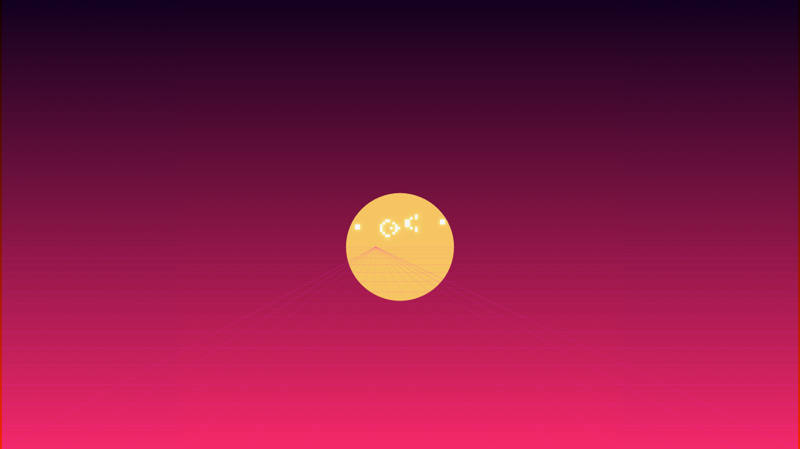
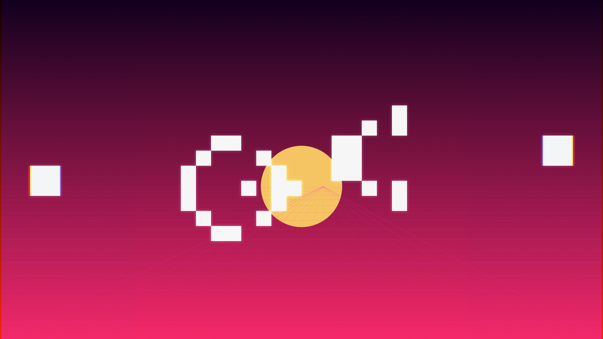